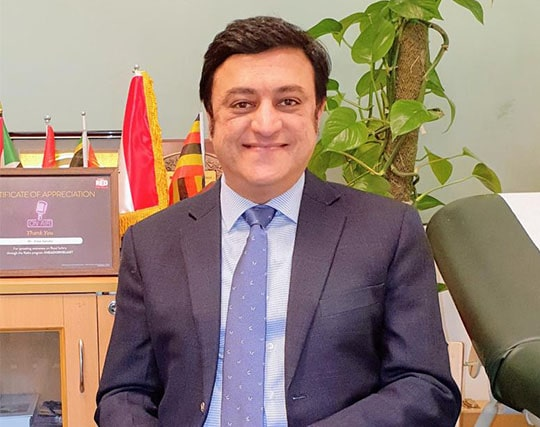

Dr. Arun Saroha: Best Neurosurgeon in Delhi
Dr. Arun Saroha is one of the Best Neurosurgeon in Delhi. He has more than 20 years of experience in the field of neurosurgery. He is an expert in treating brain and spine issues. He worked as the Head of Neurosurgery at Artemis and Paras Hospitals in Gurgaon before joining Max Healthcare.
Work Experience:
- He has 20 years of fine experience in the field of Neurosurgery & Spine Surgery.
- Performed more than 8000 surgeries successfully and has trained many Indian/International surgeons.
- He is Visiting Consultant to Kenya, Nigeria, Iraq, Uzbekistan, and Sudan.
- Speaker at various national/international conferences & workshops.
- He has been part of many live spine surgery workshops & training courses.

Services Offered by Dr. Arun Saroha- Leading Neurosurgeon in Delhi
Disc Herniation
Due to aging or an injury, the inner gel may come out and cause protrusion in the outer ring. This condition is slipped disc.
Read More
Spondylosis
Spondylosis is associated with the wear and tear of the bones, ligaments and weakening of the spinal discs.
Read More
Brain Tumor Surgery
A brain tumor is a mass of abnormal cells that forms in any part of the brain.
Read More
Headache Treatment
Most brain tumor patients experience headache. Headache can be caused by various triggers and there are different types of headaches.
Read More
Frequently Asked Questions
Dr. Arun Saroha is the best Neurosurgeon in Delhi with an amazing experience of 20 years. He has class apart surgical skills and has more than 8000 happy patients. He ensured top quality treatment to his patients.
When a rubbery disc comes in between the spinal bones it causes disc herniation. Dr. Arun Saroha is the best neurosurgeon in Delhi for treatment of disc herniation.
Dr. Arun Saroha is one of the best Neurosurgeons in Delhi specialised in brain and spine surgeries. Dr. Saroha has an experience of over 20 years and he has performed more than 8000 brain and spine surgeries as a neurosurgeon and has served best hospitals across India. He is the best neurosurgeon in Delhi.
What our patients say about the Best Neurosurgeon in Delhi
Dr. Arun is the best neurosurgeon in Delhi. Thank you sir for the great advice, and support we received from you. You are a dedicated, thoughtful, and compassionate doctor. We all in our family feel blessed to meet you.
He pays close attention to patient needs and even he would follow up to check upon patient well-being. He always gives clear answers to any of the questions. Highly recommended.
Dr. Arun is the best neurosurgeon doctor in Delhi. He listens to the patient well and diagnose with precision. Have consulted him for my parents multiple times. Very satisfied with his approach and treatment.
I had developed a tumour in my brain making it hard for me to do any normal work at all. Thankfully the best neurosurgeon in Delhi removed my tumour with surgery without any pain and with minimal side effects too.
My uncle was having constant headaches which made it hard for him to work and get up in the mornings. When it became too much I consulted Dr.Arun Saroha who is the best neurosurgeon in Delhi and he healed him in just 2 months with therapy and surgery.
My uncle was having a headache for several days which made it hard to do any work. I approached the best neurosurgeon in Delhi. Dr. Arun Saroha diagnosed the headache due to tumour through MRI and CT scan. My uncle is well now after surgery with him and is able to do all his work.
I felt dizziness but it kept coming and going. When it became too much I contacted the best neurosurgeon in Delhi. My dizziness was diagnosed as a tumour in my back brain by Dr. Arun Saroha. And he removed it efficiently through laparoscopic surgery.
I had my spine surgery from Dr. Arun Saroha. He is the best neurosurgeon in Delhi. He is amazing. Thank You so much doctor. I had cervical spine surgery done under him..Postoperative I have no recurrence of pain. I recommend him to my friends and relatives for all the spine surgeries as he is the best neurosurgeon in Delhi .
My wife was suffering from a severe headache, saw flashy bright lights, and became very weak. We realized that my wife was suffering from an ischemic brain stroke. I was utterly shattered. However, I must say, Dr. Arun, explained everything in a very linear and logical way, told us how this could be treated, and gave medication for the same. Today my wife is much better, and her health is improving rapidly. Thank You, Dr. Arun. He is the best neurosurgeon in Delhi.
Dr. Arun is the best neurosurgeon in Delhi. He is a really, very lovely Doctor; he will explain everything, listen to you, and make the treatment to the best of your satisfaction and what is required. He has thoroughly explained and listened to every problem in detail. All thanks to him. He is faithful to his words—the best neurosurgeon in Delhi.
My father has been suffering from age-related Neuro problems. We consulted Dr. Saroha for the same. It was a miracle that my father slept peacefully at night, almost after two months. It's just the 4th day since we consulted Dr. Arun, and we can see a significant improvement in my father's health. Dr. Arun is the best neurosurgeon in Delhi. He is a wonderful Dr.
This pandemic hit us a lot, internet and work from home had changed our daily routine. As a I.T. Engineer, I was always work in computer and because of sitting 24*7 in chair. I was in a lot of pain and this pain was affecting my daily routine. I was not able to be working properly due to this back pain. After that my friend advice me that you have to talk with DR. Arun Saroha. I consulted with Dr. Arun Saroha. He started my treatment after one month and I am back to my normal life. He such a best neurosurgeon in delhi. I suggest everyone as his name.
Thankyou Dr. Arun Saroha. You are the best neurosurgeon in Delhi. I got treatment for my continuous headache. I went to several doctors but got no positive results. Dr Saroha’s treatment was magical. Now I got a cure for my headache just by taking medicines prescribed by him. He is the best neurosurgeon in Delhi. Thank you doctor.
Dr Saroha is the best Neurosurgeon in Delhi with 20 years of experience. I am extremely happy I consulted him and he gave me the best treatment . I am perfectly fine now. I got my spondylosis treatment done under him. He is knowledgeable and friendly. He works with ethics and honesty. My overall experience was amazing. He is the best neurosurgeon in Delhi.
I am happy and completely satisfied with the quality of treatment given by Dr Saroha. He is the best neurosurgeon in Delhi. Within 10 days of my treatment I got relief from my spine injury. Thank you Dr Saroha.
Amazing and world class doctor. He is the best neurosurgeon in Delhi. Extremely happy I consulted him for my neuro problems. I got instant relief. He is like a family now. Thank you Dr Saroha.
Dr. Arun Saroha is one of the best brain tumor surgeon in Delhi. My mother suffred from brain tumor. We lost all hope. He gave her new life. He has 20 years of experience. He is very kind person. If anyone needs brain tumor surgeon in delhi i recommended Dr. Arun Saroha.
Free Medical Consultation
Fill this form to avail free consultation with Dr. Arun Saroha
- Explain your health concerns.
- A Specialist will answer your questions.
- Review your case documents.
- Follow up your medical condition.
- Check your surgery result.